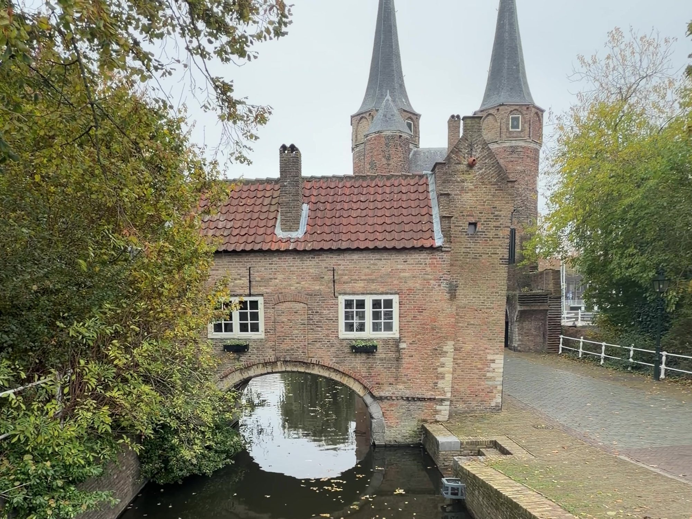
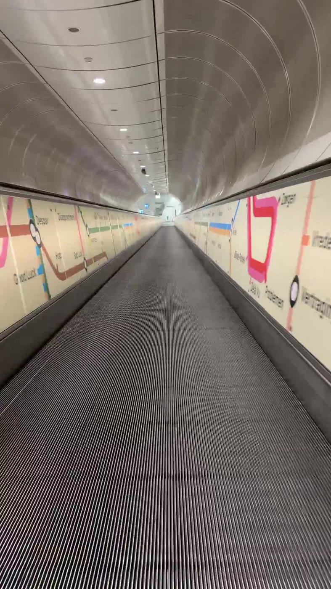
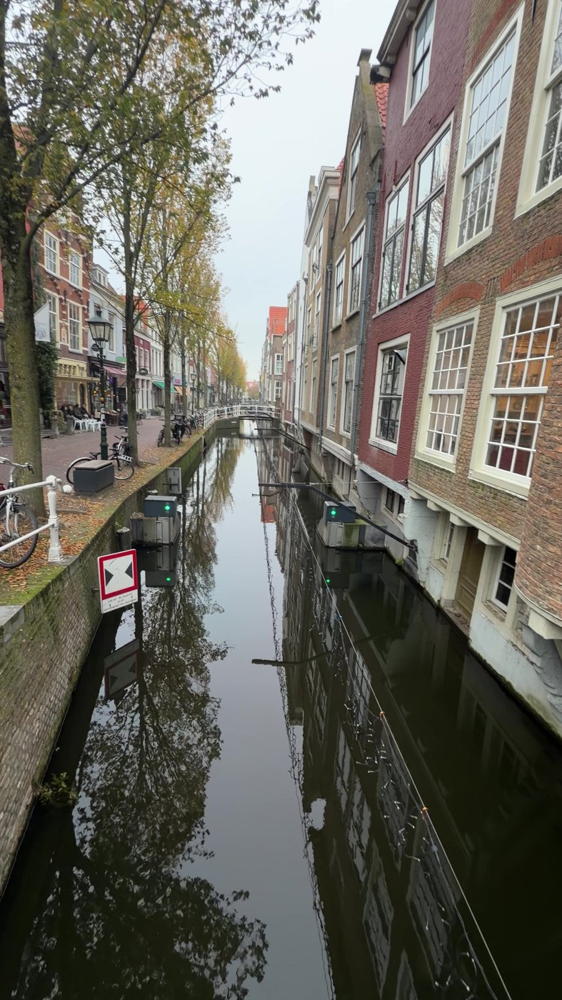
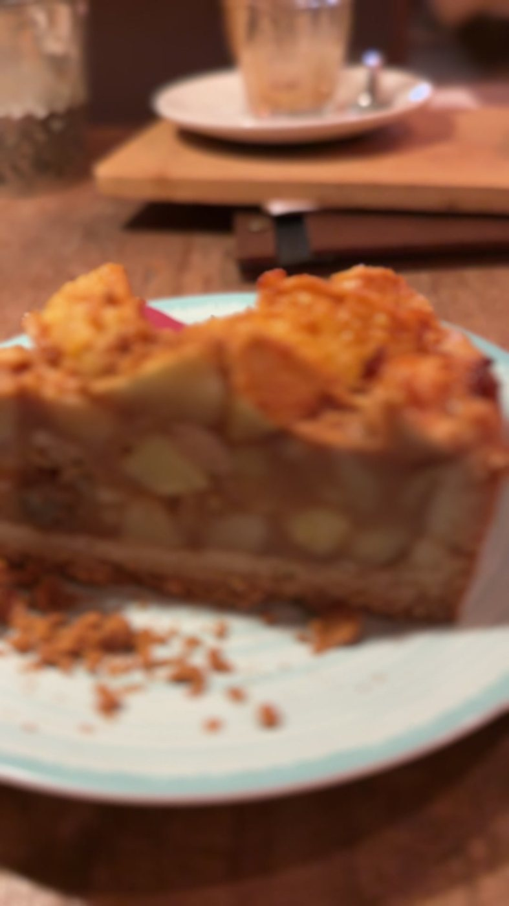

Rotterdam port day
A Quiet Day in Delft from the Rotterdam Cruise Port

On a port day, the introvert in me goes looking for the quietest place I can reach by train. Delft is half an hour away, and it was exactly what I was looking for.
Getting there
This is the easy part. The cruise terminal sits on the Wilhelminapier, and the Wilhelminaplein metro stop is a short walk away. Take the metro a few stops to Rotterdam Centraal, then a train to Delft. The whole trip took me about 30 minutes, and the trains run often enough that you don't need to plan around a timetable.

Delft station is on the edge of the old town, so once you're there, you walk. Nothing in the center is far from anything else.
What the day is like
Delft is canals, brick, bridges and very little hurry. It's small enough to wander without a map and pretty enough that you don't mind getting a little lost. In November, with the leaves turning and the water still, it was about as peaceful as a town gets.

The Markt, the main square, is the place to start. The town hall sits at one end and the Nieuwe Kerk at the other, and it's worth a slow lap before you head off along the canals.
Walk out to the Oostpoort, the old eastern city gate, with its two pointed towers and its bridge over the water. It's the last of Delft's medieval gates still standing, and it's one of those places that makes you stop and just look for a while.
Coffee, and somewhere to sit
Delft has no shortage of bakeries and coffee places, and that's most of what I wanted from the day. My favorite was Neef Rob, a café that's also a coffee, tea and chocolate shop: warm lamps, deep chairs, and the kind of room where nobody minds if you stay a while. I had a coffee and a slice of appeltaart, the tall Dutch apple pie, and I'd go back for the pie alone.

On your way out, the shop side is a good place to find something to take home that isn't a magnet.
Why it works for a port day
It's close, it's simple to get to on your own, and it asks almost nothing of you. No tour, no tickets to book, no crowds to fight. You can see it in a morning or fill the whole day, and you'll be back at the ship with plenty of time to spare.
Accessibility
Getting there
Most Dutch train stations have a lift or a ramp. If you'd like help boarding the train, the Dutch railway, NS, offers travel assistance, which you need to book at least 24 hours ahead. Rotterdam's metro stations generally have lifts as well, but check your stops before you go.
Getting around Delft
The town is flat and the distances are short, which helps a lot. The streets are mostly brick, and some are uneven, and many of the canal bridges are gently humped. A café stop every hour or so is easy to arrange, since there's one on nearly every corner.
Would I go back?
In a heartbeat. It was an easy, unhurried, honestly perfect day, the kind I go looking for on every port stop and don't always find. I'm glad I spent it in Delft, and I'd love to come back someday, with the afternoon left open this time.
If a Rotterdam sailing is on your mind, tell me about it.
Related: Arrive before you arrive: a night at Rotterdam's Hotel New York